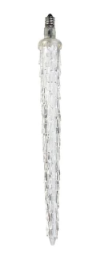

12" Commercial Cool White Steady Burning LED Icicle Christmas Light Bulb - 15794676. Color: cool white
Commercial grade light
Cool white has a very slight blue tint, it has the look of ice and is used to create a true icy wintry scene
When lit, a series of LED lights light up the bulb - steady burning
Bulb size: C9
E12 nickel bases (candelabra)
50,000 hour life
Durable non-glass bulb
Casing is weather, break, fade, peel and chip resistant
Bulbs stay cool to the touch
Energy efficient bulbs will save up to 90% on energy costs
Icicle has 7 LED lights inside
Icicle works with standard sockets
UL listed for indoor and outdoor use
120 Volts, 0.0041 amps, 0.5 watts
Material(s): durable plastic/metal
Dimensions: 12" long x 1.125" diameter